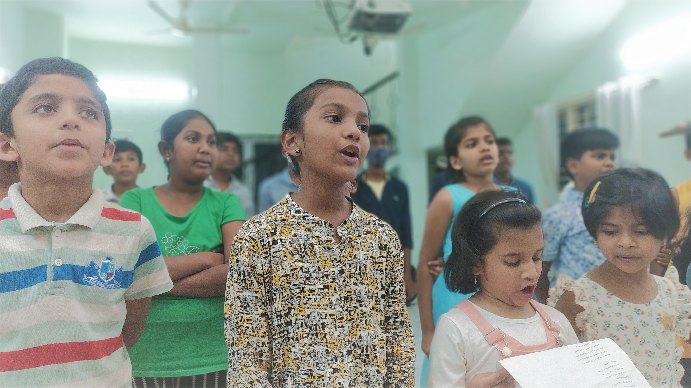
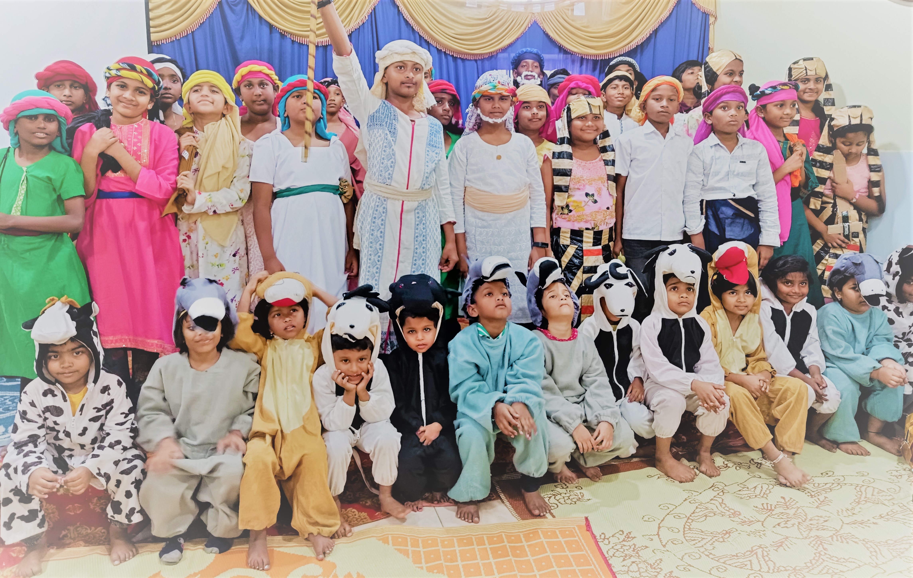
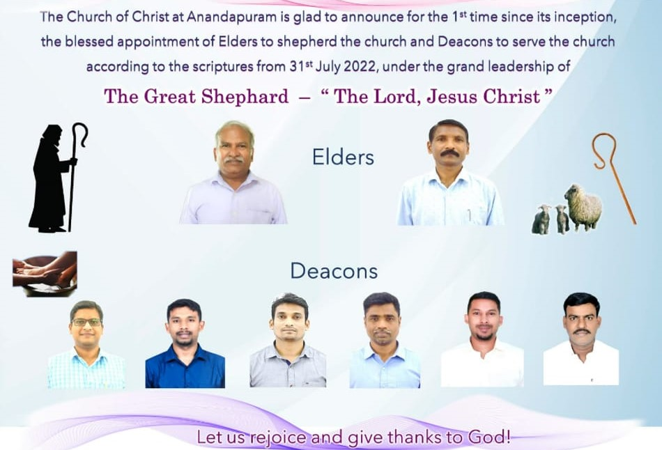

Biblical worship
Prayer, Scripture, preaching, the Lord's Supper, and a cappella praise are central to our gatherings.
Join us in Anandapuram for Bible-centered worship, heartfelt fellowship, family ministries, and spiritual growth across generations.
Welcome to the Church of Christ, Anandapuram - the first Telugu Church of Christ in Bengaluru. We are committed to worshiping God, growing in faith, sharing His love, and walking together as a church family.
Prayer, Scripture, preaching, the Lord's Supper, and a cappella praise are central to our gatherings.
We encourage spiritual growth for children, youth, women, families and long-time members alike.
Questions, prayer needs and home Bible study requests are always welcome.
Visit in person, connect online, follow worship recordings, and stay in touch throughout the week.
Our worship services are designed to help the church remember Christ, hear the Word, and encourage one another.
Anandapuram Church Of Christ Bengaluru
Anandapuram Church Of Christ Bengaluru
We support children with engaging teaching, worship and community experiences designed for their age and growth.

Every Sunday at 9:00 AM.
Age-appropriate lessons that help children grow in faith and understanding.

Fun, learning and spiritual growth for children.
A memorable experience filled with worship, teaching and joyful participation.
Throughout the week we gather for study, encouragement, fellowship and spiritual support.
Dig deeper into Scripture and grow together through study and discussion.
Encouraging young people through Bible study, fellowship and spiritual formation.
Regular connection, encouragement and growth for women in the congregation.
Prayer, fellowship and Bible study shared in homes across the community.
Connect directly for prayer support, ministry questions or visit coordination.

Faithful leadership supports the church through service, guidance and stewardship across the congregation.
Stay connected throughout the week through online worship content and ministry updates.
We are glad to help with prayer requests, visit planning and any questions about worship services.
22, 1st Main Rd, Ananda Puram, Jeevan Bima Nagar, Bengaluru, Karnataka 560075
Everything here keeps the heart of your original content, but in a more structured and easier-to-browse format.